專案總覽：CMOS Logic Gates Layout Design
本附件是一個以 Electric VLSI Design Tool 完成的 CMOS 邏輯閘專案，內容涵蓋 schematic、layout、DRC 驗證、模擬波形、Electric 專案檔 .jelib，以及可輸出的 GDS 版圖檔。適合用來理解「從電晶體電路 → 版圖 → 驗證 → 波形」的完整流程。
附件包含
- 8 種 CMOS 邏輯閘：Inverter、Buffer、AND、OR、NAND、NOR、XOR、XNOR
- 每種邏輯閘至少有三張圖：Schematic、Layout、Output Waveforms
- 每個資料夾含 Electric 專案檔 .jelib 與 GDS 檔
學習目標
- 認識 CMOS pull-up / pull-down network
- 看懂 schematic 與 layout 的對應
- 用真值表確認波形是否正確
- 了解 DRC 與 GDS 在實體設計中的意義
CMOS 邏輯閘設計流程
在 Electric VLSI 中，先用 schematic 描述 transistor-level 電路，再建立實體 layout。Layout 必須符合製程設計規則，因此需要做 DRC。波形模擬則用來確認輸入組合與輸出真值表一致。最後的 GDSII 是常見 IC layout 交換格式，可供其他 EDA 工具讀取。
Open .jelib → view schematic/layout → run ALS simulation → export .gds
全部邏輯閘真值表總整理
真值表是檢查 waveform 的依據。波形圖中的輸出訊號，應該在每一組輸入下符合下列關係。
=================================== CMOS LOGIC GATES - TRUTH TABLES =================================== 1. NOT (Inverter) ----------------- | A | Output | |---|--------| | 0 | 1 | | 1 | 0 | 2. Buffer ----------------- | A | Output | |---|--------| | 0 | 0 | | 1 | 1 | 3. AND Gate ----------- | A | B | Output | |---|---|--------| | 0 | 0 | 0 | | 0 | 1 | 0 | | 1 | 0 | 0 | | 1 | 1 | 1 | 4. OR Gate ---------- | A | B | Output | |---|---|--------| | 0 | 0 | 0 | | 0 | 1 | 1 | | 1 | 0 | 1 | | 1 | 1 | 1 | 5. NAND Gate ------------ | A | B | Output | |---|---|--------| | 0 | 0 | 1 | | 0 | 1 | 1 | | 1 | 0 | 1 | | 1 | 1 | 0 | 6. NOR Gate ----------- | A | B | Output | |---|---|--------| | 0 | 0 | 1 | | 0 | 1 | 0 | | 1 | 0 | 0 | | 1 | 1 | 0 | 7. XOR Gate ----------- | A | B | Output | |---|---|--------| | 0 | 0 | 0 | | 0 | 1 | 1 | | 1 | 0 | 1 | | 1 | 1 | 0 | 8. XNOR Gate ------------ | A | B | Output | |---|---|--------| | 0 | 0 | 1 | | 0 | 1 | 0 | | 1 | 0 | 0 | | 1 | 1 | 1 | ============================ The End ============================
NOT / Inverter
邏輯式
Y = NOT A
中文說明
反相器：輸入為 0 時輸出為 1；輸入為 1 時輸出為 0。CMOS 結構由上方 PMOS 與下方 NMOS 組成，兩者 gate 同接輸入 A，drain 共同接輸出 Y。
真值表
| A | Y |
|---|---|
| 0 | 1 |
| 1 | 0 |
附件檔案
- CMOS INVERTER LAYOUT.png
- CMOS INVERTER OUTPUT WAVEFORMS.png
- CMOS INVERTER SCHEMATIC.png
- CMOS_Inv.jelib
- Inv.gds
Schematic 用來看 transistor 連接；Layout 用來看 diffusion、poly、metal 的實體排列；Output Waveforms 用來確認輸出是否符合真值表。
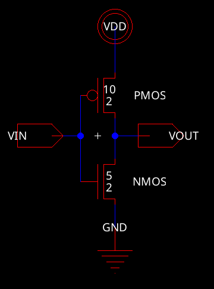
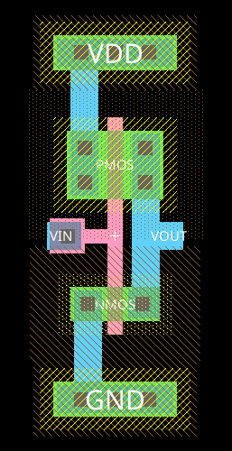
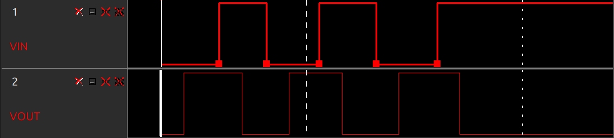
Buffer
邏輯式
Y = A
中文說明
緩衝器可視為兩級 inverter 串接，邏輯值不改變，但可提升驅動能力、隔離前後級負載，波形輸出與輸入同相。
真值表
| A | Y |
|---|---|
| 0 | 0 |
| 1 | 1 |
附件檔案
- BUFFER_GATE.jelib
- Buffer.gds
- CMOS BUFFER LAYOUT.png
- CMOS BUFFER OUTPUT WAVEFORMS.png
- CMOS BUFFER SCHEMATIC.png
Schematic 用來看 transistor 連接；Layout 用來看 diffusion、poly、metal 的實體排列；Output Waveforms 用來確認輸出是否符合真值表。
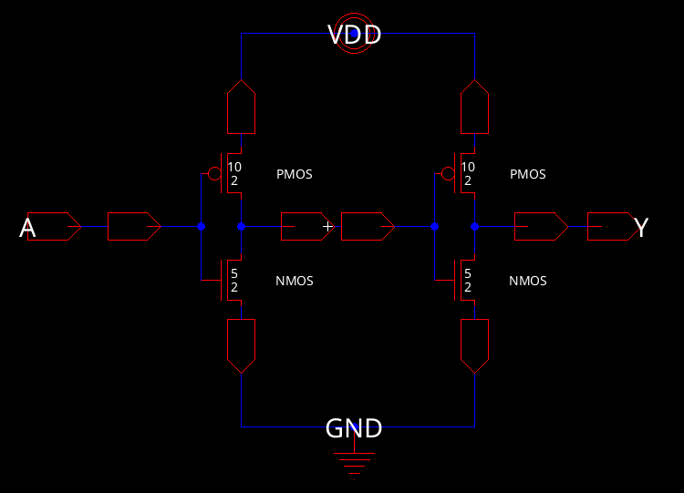
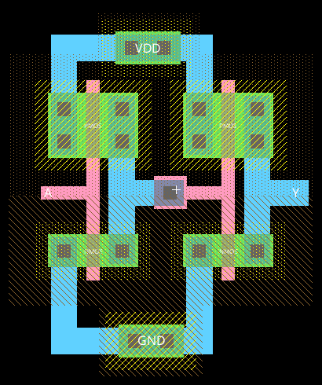
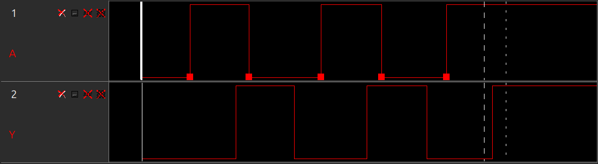
AND
邏輯式
Y = A · B
中文說明
AND 閘通常由 NAND 再接 inverter 形成。只有 A 與 B 同時為 1 時輸出為 1，其餘情況輸出為 0。
真值表
| A | B | Y |
|---|---|---|
| 0 | 0 | 0 |
| 0 | 1 | 0 |
| 1 | 0 | 0 |
| 1 | 1 | 1 |
附件檔案
- CMOS AND LAYOUT.png
- CMOS AND OUTPUT WAVEFORMS.png
- CMOS AND SCHEMATIC.png
- CMOS_AND.jelib
- and.gds
Schematic 用來看 transistor 連接；Layout 用來看 diffusion、poly、metal 的實體排列；Output Waveforms 用來確認輸出是否符合真值表。
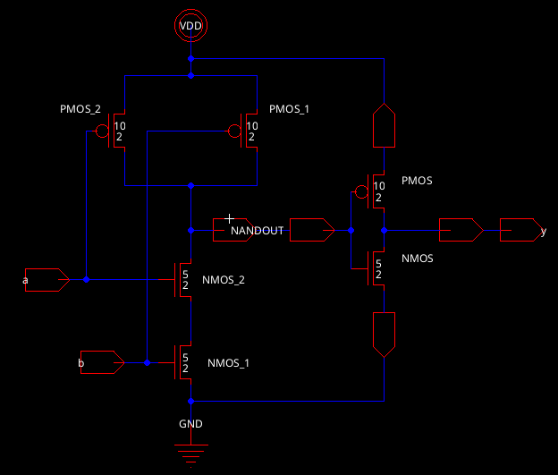
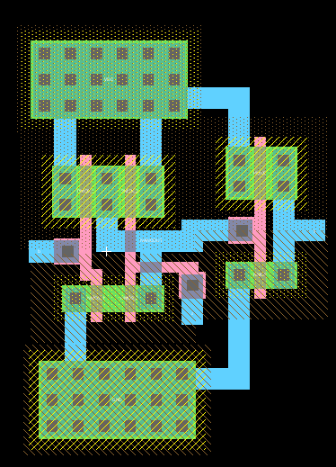
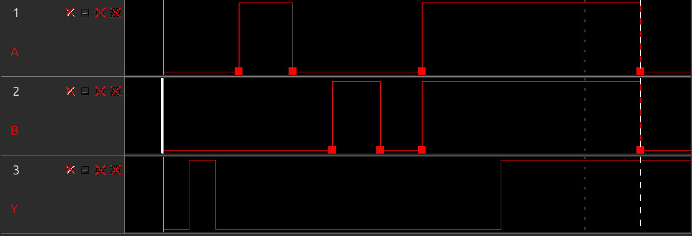
OR
邏輯式
Y = A + B
中文說明
OR 閘通常由 NOR 再接 inverter 形成。只要任一輸入為 1，輸出即為 1；兩個輸入都為 0 才輸出 0。
真值表
| A | B | Y |
|---|---|---|
| 0 | 0 | 0 |
| 0 | 1 | 1 |
| 1 | 0 | 1 |
| 1 | 1 | 1 |
附件檔案
- CMOS OR LAYOUT.png
- CMOS OR OUTPUT WAVEFORMS.png
- CMOS OR SCHEMATIC.png
- CMOS_OR.jelib
- or.gds
Schematic 用來看 transistor 連接；Layout 用來看 diffusion、poly、metal 的實體排列；Output Waveforms 用來確認輸出是否符合真值表。
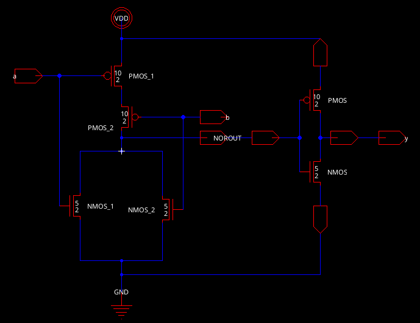
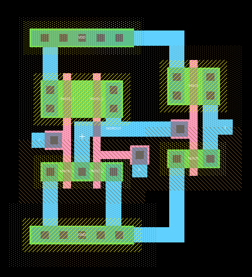
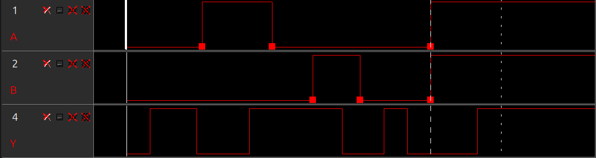
NAND
邏輯式
Y = NOT(A · B)
中文說明
NAND 是通用邏輯閘。PMOS pull-up network 並聯、NMOS pull-down network 串聯，因此只有 A、B 同時為 1 時，NMOS 串聯導通把輸出拉到 0。
真值表
| A | B | Y |
|---|---|---|
| 0 | 0 | 1 |
| 0 | 1 | 1 |
| 1 | 0 | 1 |
| 1 | 1 | 0 |
附件檔案
- CMOS NAND LAYOUT.png
- CMOS NAND OUTPUT WAVEFORMS.png
- CMOS NAND SCHEMATIC.png
- CMOS_NAND.jelib
- nand.gds
Schematic 用來看 transistor 連接；Layout 用來看 diffusion、poly、metal 的實體排列；Output Waveforms 用來確認輸出是否符合真值表。
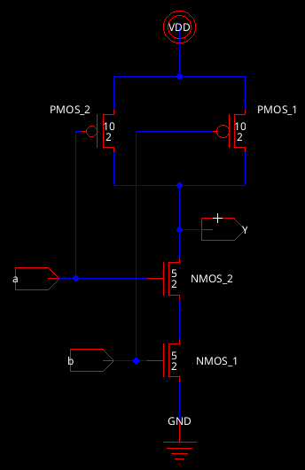
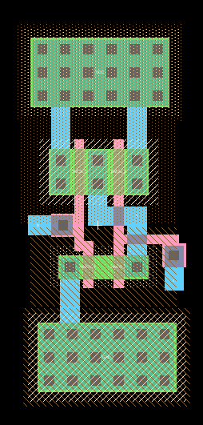
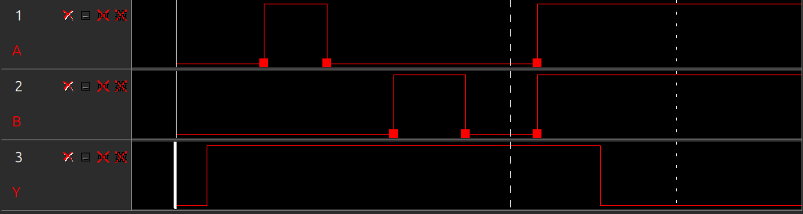
NOR
邏輯式
Y = NOT(A + B)
中文說明
NOR 也是通用邏輯閘。PMOS pull-up network 串聯、NMOS pull-down network 並聯，因此只要任一輸入為 1，輸出就會被拉到 0。
真值表
| A | B | Y |
|---|---|---|
| 0 | 0 | 1 |
| 0 | 1 | 0 |
| 1 | 0 | 0 |
| 1 | 1 | 0 |
附件檔案
- CMOS NOR LAYOUT.png
- CMOS NOR OUTPUT WAVEFORMS.png
- CMOS NOR SCHEMATIC.png
- CMOS_NOR.jelib
- nor.gds
Schematic 用來看 transistor 連接；Layout 用來看 diffusion、poly、metal 的實體排列；Output Waveforms 用來確認輸出是否符合真值表。
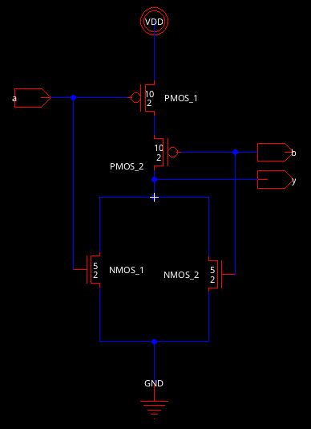
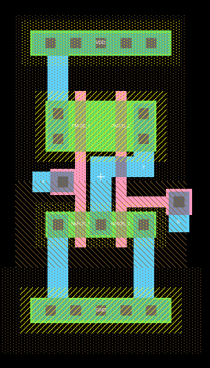
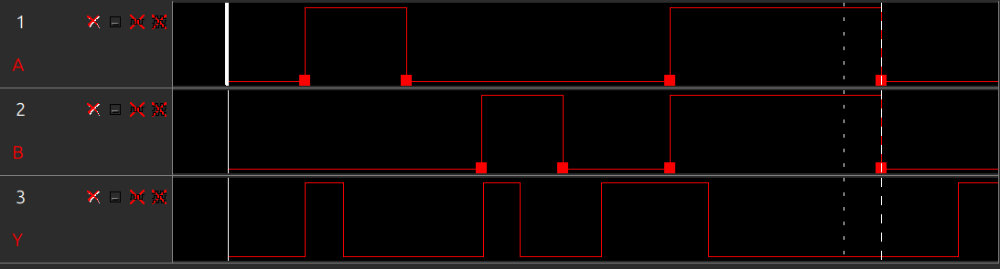
XOR
邏輯式
Y = A ⊕ B
中文說明
XOR 表示「不同為 1」。當 A、B 相同時輸出 0；不同時輸出 1。版圖通常比 NAND/NOR 複雜，需要互補訊號與較多 transistor。
真值表
| A | B | Y |
|---|---|---|
| 0 | 0 | 0 |
| 0 | 1 | 1 |
| 1 | 0 | 1 |
| 1 | 1 | 0 |
附件檔案
- CMOS XOR LAYOUT.png
- CMOS XOR OUTPUT WAVEFORMS.png
- CMOS XOR SCHAMATIC.png
- CMOS_XOR.gds
- CMOS_XOR.jelib
Schematic 用來看 transistor 連接；Layout 用來看 diffusion、poly、metal 的實體排列；Output Waveforms 用來確認輸出是否符合真值表。
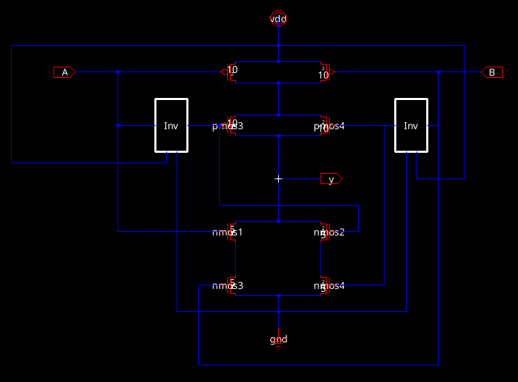
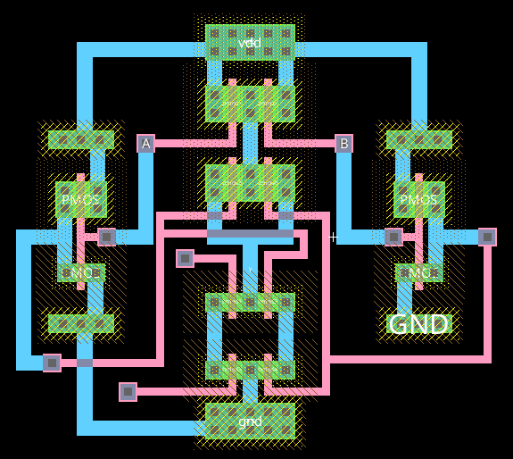
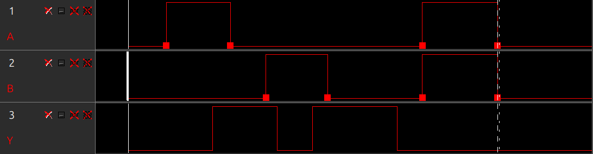
XNOR
邏輯式
Y = NOT(A ⊕ B)
中文說明
XNOR 表示「相同為 1」。當 A、B 相同時輸出 1；不同時輸出 0，可視為 XOR 後再反相。
真值表
| A | B | Y |
|---|---|---|
| 0 | 0 | 1 |
| 0 | 1 | 0 |
| 1 | 0 | 0 |
| 1 | 1 | 1 |
附件檔案
- CMOS XNOR LAYOUT.png
- CMOS XNOR OUTPUT WAVEFORMS.png
- CMOS XNOR SCHAMATIC.png
- CMOS_EXNOR.jelib
- exnor.gds
Schematic 用來看 transistor 連接；Layout 用來看 diffusion、poly、metal 的實體排列；Output Waveforms 用來確認輸出是否符合真值表。
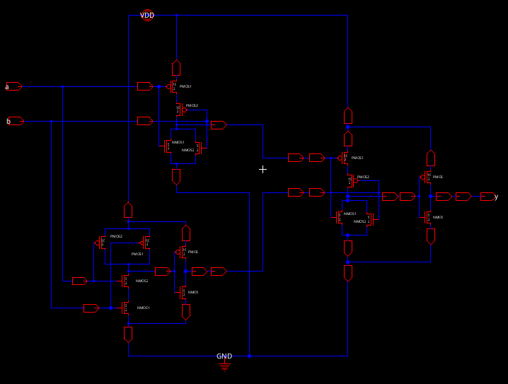
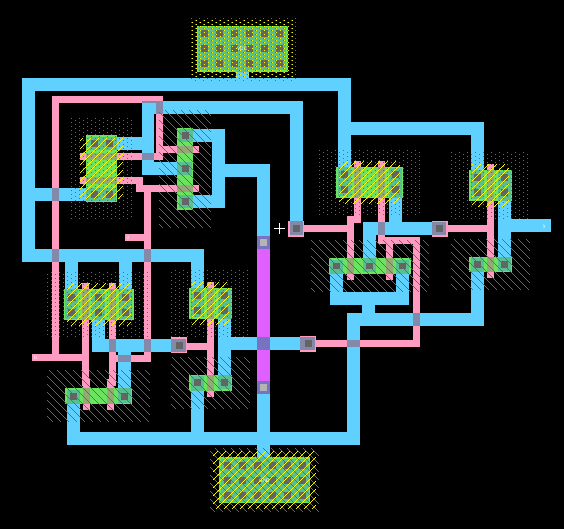
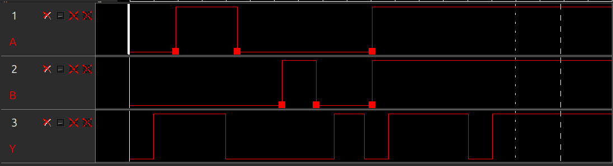
DRC、Simulation、GDS 的意義
DRC
DRC 是 Design Rule Check，用來檢查 layout 是否違反製程規則，例如線寬、間距、接觸孔、metal overlap 等。專案 README 說明這些設計已完成 DRC-verified designs。
ALS Simulation
ALS 是 Electric 內建邏輯模擬器，用輸入 waveform 驗證輸出。若輸出與真值表一致，即代表邏輯功能正確。
GDSII
GDS 是 IC layout 常用交換格式，可把 Electric 中的版圖輸出給 KLayout、Magic 或其他 EDA 流程使用。
總結：這份附件可如何用在報告或投影片
本 HTML 已把附件資料整理成投影片式教學頁面。報告時可依序說明：先介紹 CMOS 設計流程，再用真值表建立邏輯標準，接著逐一展示每個邏輯閘的 schematic、layout 與 waveform。對 VLSI 作業而言，最重要的是說清楚「layout 是否對應 schematic」、「waveform 是否符合真值表」、「DRC 是否通過」以及「GDS 檔代表可交換的實體版圖」。
若要對應課堂 Lab，可特別強調 NAND 與 NOR 是 Lab9 常用通用閘；XOR/XNOR 則可延伸到 Lab10 的複雜邏輯與 stick diagram / Euler path 觀念。